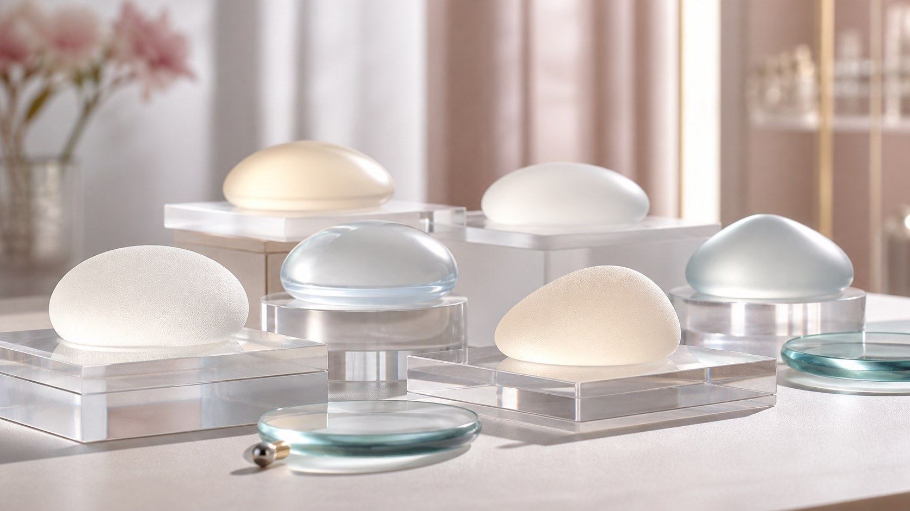
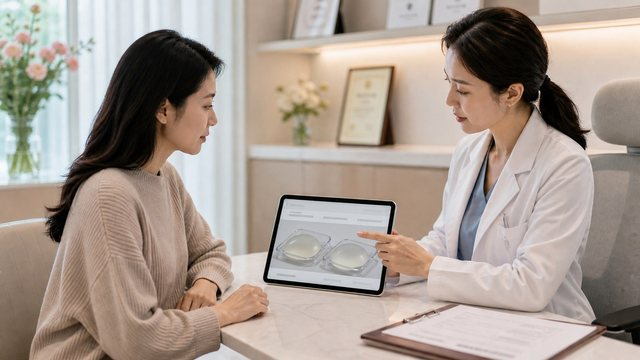
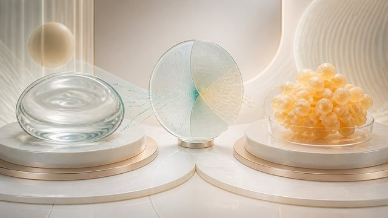

胸部整形 · 隆胸
假体材质与品牌怎么选｜适合比「贵」更重要
假体分材质、表面（光面/毛面）和形状（圆形/水滴），品牌工艺也各有差异。这篇不讲哪款最好，而是教你从「你自己需要什么」出发去选，别让价格和广告替你做主。

选假体，很容易掉进「看品牌、看价格」的坑：越贵越好吗？某款是不是更自然？其实更可靠的思路是反过来——先想清楚自己的身体条件和期望，再在医生的评估下匹配对应的假体。假体的选择，主要看材质、表面、形状三个维度。
先说材质。主流的乳房假体用的是硅胶，而硅胶本身又有很多细分，比如凝胶的填充方式、黏稠度不同，做出来的手感和塑形表现也不一样。某种材质是不是适合你，要看你的胸部基础和组织条件，而不是「越贵越好」或「越软越好」。这个判断，需要医生结合你的实际情况来权衡。
再说表面。假体表面主要分光面和毛面。光面比较光滑，手感普遍偏软；毛面表面有纹理，常见说法是能在一定程度上降低包膜挛缩的发生概率。两种各有说法，且不同品牌、不同工艺下的表现也不一样，没有一个统一答案。选哪个，值得你向医生问清楚，而不是单凭一句话就定。
然后是形状，主要分圆形和水滴形。圆形适合胸部有一定基础、希望增大的人，形态比较饱满；水滴形（也叫解剖形）下缘更饱满、上缘更自然，适合胸相对平、想要更自然形态的人。选哪种，同样取决于你的身体基础和期望，而不是广告上哪张图看起来顺眼。
品牌和工艺的差异也是真实存在的：不同品牌在凝胶品质、外壳、表面处理、以及产品的可追溯性上会有区别。但品牌名和价格，不代表「就适合你」。真正决定效果的，是一个整体的组合——假体本身、医生的置入技术、机构的手术条件、术前的精准测量，以及术后规范的随访。一套搭配得当的方案，远比一个名牌更有意义。
所以别盲目追贵，也别只看宣传。选假体这件事，光靠网上比较是比不出答案的。
那该怎么真正选对？回到那条最稳的原则：到具备资质的正规医疗机构，由执业医师面诊后评估。医生会结合你的身体检查、胸部基础、期望效果、以及你对恢复的接受度，给出适合你的方向和范围，再和你一起决定。把专业判断交给面诊，比自己在网上挑更靠谱。
本文用于公众健康教育，不构成医疗建议，不替代面诊。医美决策请与具备资质的医师面诊后作出。

